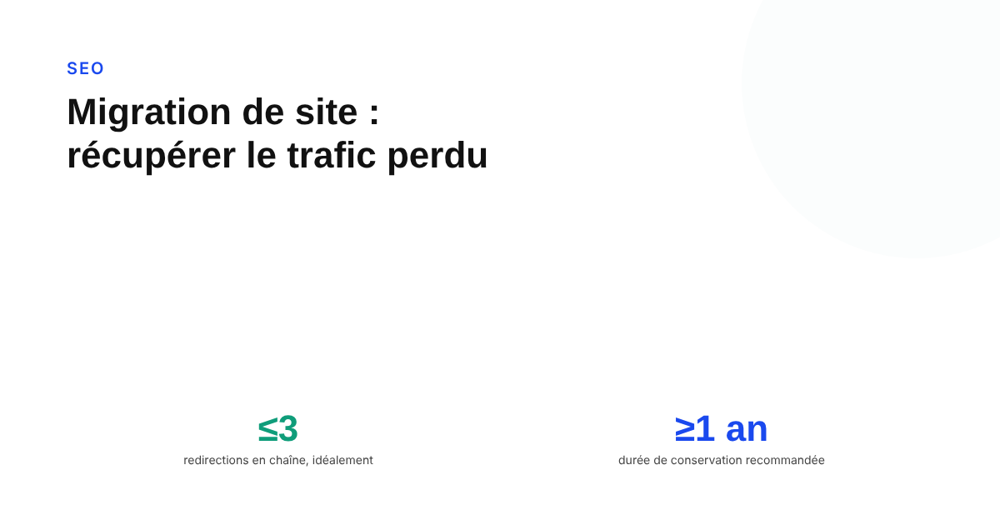

Comment récupérer le trafic perdu après une migration de site : la checklist
Changement de nom de domaine, passage en HTTPS, refonte complète : une migration fait presque toujours chuter le trafic pendant quelques semaines. La documentation officielle de Google dit précisément comment limiter la casse — et ce qui, une fois oublié, transforme une baisse temporaire en perte définitive.

Une migration de site — nouveau nom de domaine, passage en HTTPS, refonte de l'arborescence — s'accompagne presque toujours d'une baisse de trafic temporaire, même quand tout est fait correctement. La documentation officielle « How to move a site » de Google Search Central décrit précisément comment limiter cette baisse. Le problème n'est presque jamais la migration elle-même : c'est un détail de cette documentation qui a été ignoré, ou abandonné trop tôt.
Ce que Google demande avant même de commencer
La documentation est explicite : « vérifiez bien toutes les variantes de l'ancien et du nouveau site ». Concrètement, cela veut dire valider dans Search Console l'ancien domaine ET le nouveau, dans toutes leurs variantes — avec et sans www, en HTTP et en HTTPS si les deux existent. Pour une migration de domaine utilisant l'outil de changement d'adresse, Google demande de soumettre une demande pour chaque variante vérifiée de l'ancien domaine, même celles qui ne sont plus utilisées activement. Oublier une variante revient à laisser une partie du trafic sans redirection suivie.
Les redirections : la durée compte plus que la technique
Sur la mécanique des redirections, deux points de la documentation sont souvent mal appliqués. D'abord la longueur des chaînes : Googlebot peut suivre jusqu'à 10 sauts, mais Google recommande de rediriger directement vers la destination finale, et si ce n'est pas possible, de garder la chaîne à « 3 redirections dans l'idéal, moins de 5 » — chaque saut supplémentaire ajoute aussi de la latence pour l'utilisateur. Ensuite la durée : Google recommande de garder les redirections serveur « généralement au moins 1 an », le temps que les signaux soient transférés et que les liens vers les anciennes URLs soient recrawlés, et suggère même de les conserver indéfiniment du point de vue de l'utilisateur. Supprimer les redirections après quelques mois, parce que « la migration est terminée », est l'erreur la plus coûteuse et la plus fréquente : tout le travail de transfert de signal s'effondre d'un coup.
Combien de temps avant que le trafic revienne vraiment
Google ne donne aucune date précise, et c'est volontaire : la documentation indique qu'« un site petit à moyen peut prendre quelques semaines pour que la plupart des pages basculent, les sites plus grands prennent plus de temps ». Googlebot doit visiter chaque ancienne et chaque nouvelle URL au moins une fois, sans fréquence de crawl garantie — ce qui explique pourquoi deux sites de taille comparable peuvent récupérer leur trafic à des vitesses différentes. La documentation précise aussi qu'après une migration, Google explore temporairement le nouveau site plus intensément que d'habitude : la capacité serveur doit pouvoir absorber ce pic, sous peine de ralentir encore le processus.
La checklist, dans l'ordre
Avant la migration : lister l'intégralité des URLs du site actuel (une recommandation attribuée à John Mueller lors d'échanges publics sur le sujet), vérifier toutes les variantes de domaine dans Search Console, préparer une redirection 301 un-pour-un pour chaque URL plutôt qu'une redirection générique vers la page d'accueil. Pendant la migration : activer les redirections dès le basculement, soumettre l'outil de changement d'adresse si le domaine change, vérifier manuellement un échantillon de redirections sur mobile et desktop. Après la migration : surveiller la couverture d'index dans Search Console semaine par semaine, conserver les redirections au moins un an sans exception, et ne jamais interpréter une baisse des 2 à 3 premières semaines comme un échec — c'est la phase que la documentation elle-même anticipe.
Ce qui transforme une baisse normale en perte définitive
Dans la quasi-totalité des migrations qui ne récupèrent jamais leur trafic, la cause n'est pas une erreur technique complexe : c'est une redirection supprimée trop tôt, une variante de domaine jamais vérifiée, ou une chaîne de redirections si longue qu'elle finit par ne plus être suivie correctement. La documentation Google donne déjà la réponse à chacun de ces trois points — il s'agit surtout de ne pas s'en écarter une fois le projet terminé et l'attention retombée.
FAQ
Combien de temps faut-il pour que le trafic revienne après une migration de site ?
Google ne donne aucun délai fixe. Sa documentation indique qu'un site petit à moyen peut voir la majorité de ses pages basculer en quelques semaines, et qu'un grand site prend plus de temps. Googlebot doit visiter chaque ancienne et nouvelle URL au moins une fois, sans fréquence de crawl garantie.
Faut-il garder les redirections indéfiniment après une migration ?
Google recommande de les garder au minimum un an pour que les signaux soient transférés et que les anciens liens soient recrawlés, et suggère de les conserver indéfiniment du point de vue de l'utilisateur. Supprimer les redirections trop tôt est l'une des causes les plus fréquentes de trafic qui ne revient jamais.
Combien de redirections en chaîne Google accepte-t-il ?
Googlebot peut suivre jusqu'à 10 sauts, mais Google recommande de rediriger directement vers la destination finale et, si ce n'est pas possible, de limiter la chaîne à 3 redirections dans l'idéal et moins de 5 au maximum.
Une migration de site à sécuriser avant de la lancer ?
Pour aller plus loin, voir la page SEO, et l'article Pourquoi Google n'indexe jamais certaines de vos pages.
Pour continuer sur ce sujet.